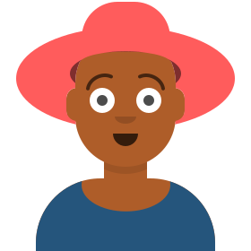

โพสต์ของคุณได้รับการอนุมัติแล้ว
3 พ.ย. 2026 14:20 (2 ชั่วโมงที่แล้ว)
มีความคิดเห็นใหม่ในโพสต์ของคุณ
3 พ.ย. 2026 09:05 (7 ชั่วโมงที่แล้ว)

เลือกไฟล์ภาพ ครอปรูป แล้วลากถอยหลังเพื่อเล็ง ปล่อยเพื่อโยนลงถัง (อัปโหลดได้ทีละ 1 ภาพ)
เลือกไฟล์รูปภาพ ลากไฟล์มาวาง คลิกที่กรอบ
ลากในกรอบเพื่อเลื่อน ลากที่มุมหรือขอบเพื่อปรับขนาด หรือใช้ปุ่มลูกศรบนแป้นพิมพ์